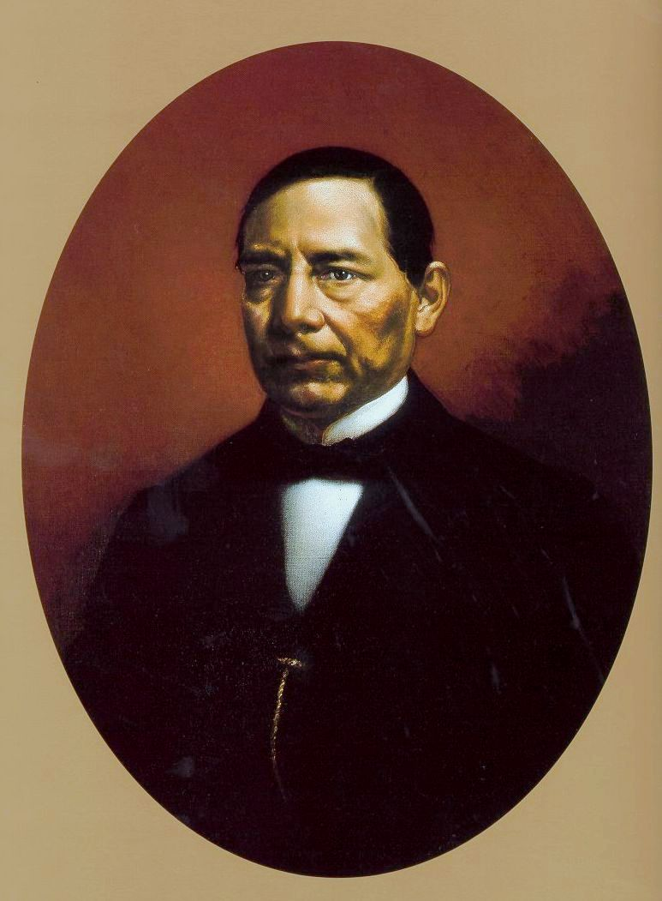

| Inicio | Logros | Galeria | contacto |
| Benito Juarez | |||
|  | |||
La aportación más importante de Benito Juárez fue la consolidación del Estado laico en México mediante las Leyes de Reforma. ¿Por qué es su contribución más trascendental?Porque transformó al país estableciendo principios que hoy se consideran fundamentales en las democracias modernas:
Gracias a estas reformas, México se encaminó hacia un modelo de gobierno más justo, moderno y basado en derechos civiles. Esta aportación no solo marcó al país, sino que también reflejó valores universales de libertad e igualdad que han inspirado a otras naciones. |
|||